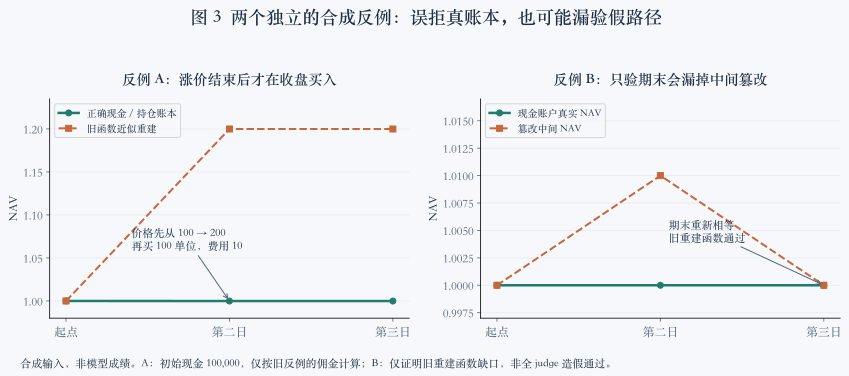

Ruiteng Huang · 2026-10-07 · 阶段性研究稿 · 证据截点 14:40 UTC
让长程 Agent 的下一步有依据
从 EdgeBench 实验理解 LoopX 的长程语义控制面
Agent 可以连续工作很多小时，也可以保留完整对话，却仍然沿着一条低收益路线不断前进。LoopX 要解决的核心问题，是让原始目标、已经获得的证据和下一步行动之间，保持可检查、可修订的联系。
这段时间，我们在 Portfolio 风险校准与 Lean 形式化证明上研究这个问题。相较最初，两题的 blind 实验已经出现扎实的系统级进步：从长期零分、无效续行和缓慢推进，走到了更多可验证产物、更可靠的持续工作，以及 Lean 共同时间窗内明显更快的证明进展。LoopX 的机制修复、提示与 benchmark 跑法的优化共同促成了这一步。
我们的阶段性判断是积极的：长程语义控制面已经在真实任务中展现价值，整套系统也比最初更有效。现在需要拆清各项改进的贡献，并把已出现的进步变得更稳定、可复用。本文同时保留整体改善的证据、具体机制的技术解释，以及尚未解决的反例。
1. 控制面究竟控制什么
一个长程 Agent 至少同时维护两种历史。对话历史保留“此前说过、做过什么”；任务与证据状态保留“现在仍然要满足什么，哪些结论在什么条件下成立，下一步为何可做”。两者可以互补，却不能相互替代。恢复同一对话，不代表旧结论仍然适用；把 Todo 勾完，也不代表最初目标已经实现。
我们把 LoopX 的技术路线称为长程语义控制面。它围绕任务意义组织执行：原始目标与验收条件约束工作，当前证据支持或反驳路线，运行结果触发继续、重规划、等待或停止。模型负责提出和解释选择；控制面负责保存来源、检查状态转换，并把当前仍有效的义务交还给执行者。
- 目标验收条件、范围、停止条件
- 选择可执行候选与选择依据
- 行动工作、验证、真实结果
- 证据观察、解释、适用条件
- 修订继续、换路、等待或结束
这个循环有两个不同的保证层级。系统可以检查一次工作是否有对应结算、证据是否来自指定版本、被拒绝的写入是否留下副作用；它不能仅靠字段检查，证明模型理解了条件或选中了最好路线。协议正确性是可以逐项验证的；认知上的净收益需要行为与结果证据。
因此，长程能力不能用运行时长、Todo 数或图节点数替代。我们真正关心的是：在约束不丢失的前提下，系统能否更早排除错误路线、复用已验证结果，并把有限预算分配给有价值的下一步。这也解释了为什么可靠的评分器、恢复协议和上下文组织，会出现在同一项研究里。
研究问题：经验能否改善后半程的选择
2026-10-10 补充研究问题与比较方法。本次不增加实验成绩；下文数值仍对应各自注明的历史版本与观察窗口。
我们希望检验的是：同一模型、可比预算下，通用 harness 能否让 Agent 更有效地积累并使用经验，使执行中后期继续产生可验证的新进展？例如，一条失败路线留下的不应只有“失败过”，还应包括适用条件、排除了什么，以及什么新证据值得重试。是否保存了这条记录、它是否改变下一步、改变是否有效，需要分别检查。
同一主会话持续理解目标和解释证据，是观察这一问题的一条路径；跨会话恢复则检验状态能否可靠交接。会话连续本身不保证经验利用更好，fresh-context 与 workflow 也可以通过文件和外部状态保留经验。比较时应记录实际会话策略、信息可用性和交接成本，让结果决定适用范围。EdgeBench §5.2 与附录 G 对持续执行和独立重试、不同 harness 的比较，为这些对照提供了依据；它们并未隔离 LoopX 的增量收益。
2026-10-16 续篇沿原章节融入：原目标与恢复、历史证据复核、完整研究成本、planned/stride，以及 决策前 checkpoint 与真实对照、下一批方案。首屏与旧数值保留原截点。
2. 两个研究阶段，分别比较
研究分成两个阶段。早期以 Portfolio 风险校准与 Lean 证明，检查反馈可信性、持续工作与证据采用；近期以 Portfolio、Graph 的成熟状态研究后半程选路，并准备 Ad Placement 的可恢复研究点。下表保留早期五类执行方式，不是当前的重跑矩阵。最新同点实验比较的是均启用 stride 的 fresh 与 retained replan；下一批先从三题各一个 LoopX donor 开始。
| 执行方式 | 保留什么 | 用来回答什么 |
|---|---|---|
| 官方 worker | 官方 stop hook 与继续路径 | 官方执行机制能推进到哪里 |
| 单次 Codex | 一次调用，自然结束 | 没有外层续跑时会做多少工作 |
| 原生 Goal | Codex 的目标执行与继续机制 | 原生长程机制提供怎样的对照 |
| LoopX Resume | 同会话恢复、Todo、重规划与结算 | 语义控制与可靠续行的实际作用 |
| LoopX Explore | Resume 加可选证据记录与探索规划 | 结构化证据是否进入下一次决策 |
Portfolio 的历史设计覆盖五种执行方式 × native/blind 十臂；后续只补关键消融。Lean 主要比较 blind。native 可以取得 judge 反馈；blind 保留公开任务、训练数据、本地测试与验证工具，但无法取得 judge 分数和隐藏诊断。后台自动评测是研究者的观察，不向 blind solver 返回。因此 blind 是“无 judge 反馈”，不是“没有反馈”。
模型沿用 gpt-6.1-sol / xhigh。历史 Portfolio/Lean 数值各自保留原预算、采样、评分版本与日期；更早的 18 小时或部分 Lean 延长至 36 小时，不追溯改写。近期 Graph/Portfolio 接续是在保留已用时间、机会和冷却的累计 36 小时上限内研究；这也不等于新起 donor 各获 36 小时。新方案采用 Portfolio/Graph/Ad 的 12/18/18 小时原题上限，见末节。
早期比较过预置阶段 Todo（seeded）与由原目标形成计划（planned）、复盘周期、上下文和 Explore。后续研究选择 planned + Explore，并明确每六个已结算有效工作 Turn 复盘；这是当前研究配置，不把旧批次的三 Turn 设置冒充新值，也不改写产品中显式配置的单位。提示、runner 与契约曾一起变化，因此早期 planned 结果不能单独证明普遍优势。
早期观察到的整体进步：保留原窗口
Lean 提供了较直接的共同时间窗证据。相同 blind 条件下，早期 LoopX v14 与该期 #5844 的有效采样点如下；同一时间能推进更多可验证证明，是实际进展，不能因为尚未拆清贡献就忽略。
| Lean 原始分数 | 早期 Resume v14 | #5844 Resume | 早期 Explore v14 | #5844 Explore |
|---|---|---|---|---|
| 180 分钟 | 0.1103 | 0.3478 | 0.1134 | 0.4019 |
| 450 分钟 | 0.1882 | 0.5243 | 0.1996 | 0.5605 |
这些单次窗口里，该期两条 LoopX 路径约达到早期的 2.8–3.5 倍原始分数。这个倍率描述观测结果；提示、任务入口、runner 与控制机制一起变化，不能作为单项机制的因果增益，也不能直接推广到其他题目。
Portfolio 的进步形态不同。最初的长期零分里混有反馈包装和会计契约问题；修正以后，blind 组能产出合法账本、执行本地研究并得到有效评分。旧 Resume 的最好采样分为 17.32，后续 planned v17 达到 25.39，但其最后采样仅 12.38，旧 Resume 的最后采样为 15.57；两批预算和评分版本也不同。该期 #5844 的 Resume/Explore 在约 7 小时 45 分钟时，最好采样为 15.01/12.21，最近采样为 8.15/9.67。可评测性、续行能力与部分最好结果已经跨过早期障碍，终态质量与持续保优仍有明显空间。
我们据此肯定“系统整体比最初更有效”，同时保留两个后续问题：收益分别来自哪里，以及怎样避免新版本或更长运行出现回退。改进 benchmark 的跑法——保留共同迭代提示、正确恢复、按题配置采样与预算——本身也是长程系统工程的一部分。研究上需要记录它的贡献，不能把所有增益都记到证据图或 replan 名下。
3. 首先让反馈值得相信
最早的 Portfolio blind 零分，暴露了两个不同层次的问题。我们自己的 blind 包装不只移除了 judge 入口，还删掉了持续迭代、保留最好版本等提示；这让反馈消融混入了行为引导差异。修正后用新 attempt 重跑，保留旧结果。随后，对已结束样本的独立对账，又发现了评分器与真实成交语义之间的偏差。
一个十行就能说明的问题，可能使整条曲线失真
假设账户有 100,000 现金，资产价格从 100 涨到 200。直到第二天收盘才买入 100 单位，并付 10 佣金。买入后立即按同一收盘价估值，权益应为 99,990，NAV 为 0.9999。账户没有赚到买入之前的涨幅。
旧重建却用当日收盘后权重乘当日收益，得到约 1.199919992，进而拒绝正确账本。反方向，真实全现金路径 [1, 1, 1] 被报为 [1, 1.01, 1]，仅校验期末的函数又会通过。前一个反例证明误拒，后一个证明局部校验漏检；后者不等于“完整 judge 会接受造假”。

对两个冻结的终末样本，我们不导入 solver 的计算函数，独立核对各 243 个交易日：权益残差小于 4×10⁻⁹，NAV 残差小于 5×10⁻¹⁶，股数一致。这证明了特定账本的一致性，没有证明策略优越。另有 7 组相同成交签名，实际上对应独立的现金、库存和费用变化；签名重复只能触发调查，不能代替经济核验。
ledger-v2 的关键技术约定
新版任务契约固定初始 1,000 万现金、零持仓，交易日收盘执行，5 bps 佣金、1 bp 现金滑点；借券成本按前一收盘空头市值、4% 年率、ACT/365 自然日计提。跨零仓位拆成有序执行腿。逐日验证现金、整数股数、费用、权益、NAV 与权重。
校验必须从价格与执行重建，而非信任报告里的现金或 NAV。负例包括费用遗漏、重复执行身份、无经济效果的额外成交、库存转换错误、中间 NAV 篡改、缺失日期与非有限数值；正例包括合法同量成交、周末借券和无交易日。规则变更有独立版本，不追溯替换历史分数。修复与公开契约见 EdgeBench #14。
修复反馈，不保证策略变好
single blind 的账本可以对平，去掉错误 NAV 扣分之后，其他表现小计仍约为 −1.87，截断后仍是零分。另一个样本消除重复签名误罚会得到 18.05 的反事实值，我们没有把它写成正式新成绩。
成本归因同样需要经济量而非次数。single blind 的 475 笔成交中，281 笔与对冲相关，但其佣金只约占初始资本 0.0412%；借券成本约为 0.4484%，占总费用 0.7129% 的大部分。题目又要求对冲，不能简单删除空头。真正可检验的问题是：公开训练期的策略选择与后续对冲调整，是否共享成本和风险目标。
这一层改进的价值很大，但性质明确：它使研究能分辨真实能力与测量错误，不能算作 LoopX 的求解增益。对正在运行的 blind 组，也不能把终末隐藏诊断变成定制建议。
4. 目标、工作与继续执行，必须有不同的结束条件
上文数值表保留最初阶段稿的证据截点。以下新增机制与收尾观察更新至 2026-10-08 09:33 UTC；仍属探索性分析，不改变正式计分资格，也不代替完整终态验收。
一个具体故障是：seeded-blind 约 34 分钟时写入 no_followup，外层随后恢复了约 100 次，却没有恢复有效工作。调度器还活着，不代表语义上仍有可执行路径。另一类故障相反：模型已经知道需要重规划，控制面却先给出一个必然失败的选项，迫使它调用失败后才获得下一步。
根本区别在于：没有现成 Todo，不等于原目标已经完成。完成当前工作后，需要对照原验收判断：是否已满足；是否在已有授权范围内还有合理候选；是否只是在等外部条件；还是确实没有可做的后续。重规划可以生成新的工作，也可以有证据地继续原路线。它不应为了让循环转动而虚构任务。
为什么按有效 Turn 复盘，比按完成 Todo 更贴近长程工作
长任务可能持续数小时而不完成 Todo，所以复盘应以真实已结算工作为依据。按有效 Turn 触发的修复 已替换旧的隐式 Todo 完成计数；显式历史配置仍保留单位。本文当前接续和拟议新批统一采用六个有效工作 Turn，早期三 Turn 或产品当时的五次设置仅描述对应版本。达到周期要求重新判断，不要求换路，更不授予额外预算。
这里的 Turn 不是一句模型回复，也不是一次工具调用。周期依据唯一的工作结算事实：未结算 refresh、重试、重复记录不应凭空增加次数。达到周期只要求重新审视方向，不强迫换路，也不授予额外预算或权限。真实入口已验证 Todo 仍 open 时能触发复盘、确认继续后能再次工作；净效果仍须看模型在复盘时作了什么判断。
计数还要区分工作与观察。已验证的负结果可以是有效工作；纯监控轮询、重复提交和未完成结算不能充数。这个区别让长期仍 open 的同一个 Todo 能定期复盘，也避免后台采样把模型推入无意义的 replan。复盘的输出应连接原目标、候选证据和接下来的行动；确认“继续”可以正确，单纯确认“已检查”不足以证明研究方向更好。
复盘成本也应按触发原因拆开：周期检查、局部工作完成后的目标缺口、关键假设被新证据推翻，可能需要不同深度的判断。调整周期只影响其中一类；如果每个小任务结束都重建全局计划，减频未必解决问题。另一方面，replan 阶段可能包含有效探测与验证，不能将整段时间都算成管理浪费。需要从轨迹区分有用的路线修订、重复取证和机械记账，再检验局部续行与较重全局复盘的边界。
恢复与结算是两条相关但独立的链
会话恢复负责保存执行上下文；结算负责把当前 Turn、选定工作、验证结果、持久写回与预算消耗关联起来。丢失响应后的重试，需要识别已有结果，避免重复执行或重复计数。恢复了 session 却丢掉结算，会反复处理同一个障碍；正确结算却恢复错 session，则会丢失求解上下文。
早期修复了精确会话恢复、下一步与收据绑定、无效续跑诊断；近期继续补齐 checkpoint 选择跳转与生命周期恢复。当前原则是：从原 Turn 和已提交结果恢复，重复响应不重复执行或记账，独立新工作到来后重新判断合法路径。能恢复正确工作与选出好工作，仍是不同验收。
把原目标留在选择工作的视野里
以下补充更新至 2026-10-16，区分已合并修复与待评审提案；不改写前文历史窗口。
近期我们把检查从“是否读了 Goal”推进到“读到的究竟是哪一个目标”。原题仍在提示与任务文件中，模型也确实读取过；但部分 benchmark 新建的结构化 Goal 只有通用研究提醒。一个工作可以满足这句提醒，却离原题的主指标越来越远。另一处信息损失发生在输入投影：借用公开展示过滤器，会因路径或疑似敏感字符串丢弃整个目标段落，或截断研究证据。
#6649 因此让新建 Goal 保留原题目标与优先级，并在已授权、同 Goal 的 replan 输入中保留完整来源文本；公开导出的边界另行处理。#6654 则把同源目标投影做成 LoopX 与 benchmark 的默认关闭、显式启用开关。开启后，planning horizon 在选择工作之前呈现原 Objective、来源、独立验收与回读入口；来源改变后，下一次读取随之更新。关闭时保留原 horizon 行为，既有 replan 的 Goal 输入不受这个开关控制。它没有再持久化一份目标，也不靠每 Turn 复制一句“记住目标”。
原目标修复 #6649 已合并，horizon 提案 #6654 仍待独立评审。该提案的开关版本已验证配置界面与 CLI 的开关读回、关闭路径一致性，以及 benchmark 对有效配置的核验；同源投影也有安装包与真实 CLI 的来源到达验证。以上是候选源码的验收，不代表研究集成已经采用；旧 checkpoint 不会自动改写。这修复的是目标可见性，尚不能证明模型会正确排序目标，更不能用它解释此前所有低分。
唤醒失败为什么没有终止整场实验
旧 Graph 开关对照中，stride-on 有 20/99 次外层唤醒失败，off 有 14/104 次；成功唤醒内还分别记录了 35、45 次阶段错误。失败集中于复盘、checkpoint 选择或未结算状态恢复。外层运行器仍可继续唤醒；此前已经落盘的候选、原生结果和部分 checkpoint 也不会随一次报错消失。因此实验还能推进，却可能多次恢复同一决定、延迟真实工作，或消耗研究与捕获时间。
两臂失败阶段记录的累计耗时约 49、35 分钟，它们不是全部损失，也不能把 20/99 解释成浪费了 20% 的工作。两边故障负担不同，整体差异就混入了恢复成本。选择跳转修复 与 生命周期恢复修复 分别处理具体断点：保留原 Turn 身份，识别已提交结果，在新独立工作到来时恢复合法路径。修复不补提交机会、不重置冷却，也不能把全部历史失败追溯改成成功。后续研究需要新源码的真实采用证据。
5. Explore 的难点，是让证据到达一次真实选择
我们曾看到 Explore 开关已打开，两个组前 180 分钟的 20 次读取也都经过 hook，图却一直为空。模型并非没有发现：例如它把“有限前缀不能直接继承尾部界限”的反例留在本地验证记录中。缺口在于，工作结果没有自然进入图、关联当前问题，再被下一轮使用。提高读取 quota 无法解决一个尚未发生的写入。
因此，改进不只是“提示模型记得写图”。写入通过可选 capability hook 接入普通结果写回：在已有观察与路线决定上，显式补充问题、适用条件、输入版本和结论状态。对于已关联的问题，复用规范范围，减少重复填写；不能从低分自动推断反驳，也不能把“暂时停止”提升成“这条路线永远错误”。
- 捕获：有价值的工作结果是否写入，拒绝或重试是否可恢复？
- 关联：结论是否绑定到当前问题和 Todo，条件与版本是否完整？
- 取回：后续决策是否实际得到它，摘要是否挤掉其他相关反证？
- 采用：模型是否据此修改或明确维持选择，之后的行动是否一致？
这四步不能由节点数代替。后来的冻结四组审计，两个 Explore 组分别已有 1 条和 3 条 finding，但检查的 7 个 Todo 都没有图关联。两次首写缺少 node_id，模型转而创建节点，遇到范围冲突，最后手动记 finding。图终于非空，完整采用链仍没有建立。
#5889 针对此处摩擦：新问题可由显式问题与适用范围派生稳定身份，冲突返回不一致的字段；已存在范围保持不可变，失败无部分写入，重试不重复添加。写入仍受当前 Todo、claim 与 lease 约束。它修机械身份与错误恢复，不替模型编造科学结论。真实带 lease 的写回与读回已验证；补充运行中也出现了自然捕获、关联和下一轮交付的正例。图相对文件或同会话记忆的增量价值仍未分离。
取回端也需要渐进式设计：先覆盖不同问题，再给同一问题更多记录；在小摘要之外提供带版本的分页和按问题展开。初始只显示三条可以是节省上下文的选择，三条成为不可突破的信息上限则会损失决策依据。扩大窗口与准确选择必须一起考察。
必须保留的反证：没有图，也可能记住并使用证据
Portfolio 轨迹中，有模型保留 12 个变体、5 个训练年份和 4 个暖/冷启动检查的结果；另一组用“训练 Sharpe 不低于基线且换手不高于基线”筛选 9 个候选并全部拒绝。后者不一定是好策略：所有候选训练收益更低，4 个冷启动表现更差，可能把有限搜索锁在过于保守的区域。
Lean 的该期 Explore 也会保留难点、记录错误陈述的局部反例，再去做别的章节。这些信息可以由本地文件、Todo 和同一会话携带。要证明图的增量价值，必须指出它额外避免了哪次重复、保住了哪项条件、改变了哪次选择；不能把所有记忆能力归给 Explore。
证据存在、行动采用与实际触达，分别验证
Portfolio 的一个补充样本把风险研究结论写回，再据此实现并测试尾部保护。但在本期实际输入上，受约束配置与无约束配置仍一致。结论进入代码、压力检查通过，不等于它在这次任务中产生了干预。Lean 的另一条链则从周期复盘声明候选，走到安装证明、全量构建和后续批次；这比节点数更接近采用证据，仍不能排除同会话与本地文件提供了相同信息。
边界故障也有研究价值。补充 Lean 运行在给同一个 Todo 关联第九个问题时，遇到最多八个关联的限制。它随后保留原有关联，将额外结论作为 Goal 范围内的独立证据记录，再恢复正常工作。这个限制约束当前任务关联集合，不是整张图最多八条结论。恢复发生不等于没有成本；合理的改进应减少捕获摩擦，同时保住当前决策需要的相关证据，不能靠静默删除旧反证换取成功。
复盘要审查紧邻的上次决定
历史证据在 checkpoint 中存在、模型曾经读过，与当前 replan 能结构化利用它，是三件事。我们遇到过新 Goal 的 Explore 投影报告“当前图为空”，但归档仍保留历史研究的情况。应修复来源与采用，而非据空投影判定没有经验。接续验证后来覆盖了研究状态、原目标和 Explore 的实际到达；成熟样本包含数十轮工作与上百条证据。这是可恢复性的依据，条目数本身不是研究质量。
另一项真实历史审计中，Graph 的 10 次后续复盘有 5 次仍引用更早的决定。这样会跳过刚做完的实验，持续复核一条已经陈旧的路线。沿既有历史序列与 stride owner 的修复，在原始前缀重放中为 10/10 次取得紧邻前次，并拒绝 5 个过期引用。它保证复核对象正确，不能代替模型判断前次是否实施、是否产生新信息，以及是否推进原目标。
有判别力的记录应把前次选择 → 实际候选版本 → 完成的实验 → 公开反馈 → 下一次采用或放弃连起来。Explore 的作用也应在这条链上评价：它额外保住了什么条件、避免了什么重复、改变了什么选择。一次新节点、一个 switch 标签或一张分叉图，都不能独立证明这个增量。
6. 上下文优化，应围绕决策所需的信息流
最初的一个明确冗余是：todo list --todo-id … 已经指定单个 Todo，却在详情、列表和角色视图中重复输出正文。但轨迹进一步说明，精确读取并非主路径：模型也从 Goal 文档、普通 quota 的摘要、批量命令和前轮会话获取 Todo。只把这个单命令缩短，无法解释或解决整体成本。
#5844 因此把目标收拢为“当前工作只交付一份有效正文，其他信息按需要读取”。普通 heartbeat/quota 就提供选中 Todo 的完整要求、适用验收、相关开放 User 义务及实际参与的 hook 内容，不依赖启用 TurnEnvelope。已交付的来源不再重复列为待读命令；混合了目标、其他任务与历史的 Goal 文档仍保留精确完整读取。
| 路径 | 此前 | 调整后 |
|---|---|---|
| 单个 Todo | 同一正文出现在三个视图 | 一个完整规范对象；列表查询仍是列表 |
| 普通 quota | 当前工作摘要 + 后续读取命令 | 当前工作的规范正文一次交付 + 剩余来源的读取命令 |
| 可选能力关闭 | 通用 skill 仍可能诱导无效读取 | 由参与的 hook 提示；关闭时无相应常规义务 |
| 更多背景与证据 | 重复倾倒，或只有短摘要 | 保留来源、完整读取及按问题/版本展开 |
同一合成 Goal 的具体测量，以及它不能说明什么
精确 Todo 的输出从 15,986 UTF-8 字节、三份正文，变为 2,721 字节、一份正文。普通 quota 相对命令型版本则从 23,088 增至 27,137 字节，因为附带了实际内容；待读来源从 preference + Goal + Todo 减为 Goal。不能据此宣布总 token 或延迟降低：若旧读操作本来就在一次批量调用里，少一个 CLI 进程未必少一次模型交互。
在冻结的 12 个实际 wake 样本中，12/12 获得完整 Todo，9 次来自内联或文件形式的 guard，3 次来自精确读取；另核对的 18 份正文与启动源摘要一致。这验证内容到达及来源一致，不验证理解、完整约束执行或最终净费用。此前“压缩约 78%”的合成结果也只能用于相应输出，不能推广到全程成本。
下一集成的信息组织围绕一次真实决定：当前工作直接得到完整约束；原目标以同源投影进入选择视野，更多历史与证据按适用问题和版本展开。已经交付的同一来源不应再被要求机械回读；尚未交付、来源失败或版本变化时，则沿当前契约取得完整内容。授权范围内的研究输入不应借公开展示规则删掉原目标或反证。优化单位是整条决策路径，而非某个 JSON 的长度。
可选能力尤其不能借通用说明越过开关。semantic-preference 关闭却仍因通用 skill 被反复读取，是边界泄漏；#5874 把指引放回参与的 hook。更短的包与更少的无效提示都有价值，但不应删掉验收尾部、适用范围、继续条件和失败恢复。优化单位是整条决策路径，不是某个 JSON 的长度。
工具的粒度，应对应一次有意义的操作
值得检验的方向是，把状态与恢复的复杂性收进语义完整、边界清楚的工具：例如取得当前工作所需的完整约束，或提交结果并关联它的来源与适用条件。工具内部可以执行多步校验，模型仍负责解释证据和选择路线。Anthropic 的工具设计经验 同样强调按真实工作组织接口，而非把每个底层 API 都交给模型。
这不是单纯追求更少命令。接口合并仍须保留权限、失败可见性和重试语义；是否更易学、更少出错，以及节省的交互能否转为有效工作，要通过真实执行验证。#6038 已改善具体 action 的 CLI 帮助与 lease 参数错误恢复；这属于使用路径修复，尚不能据此宣称任务效果或全程成本改善。
把一次研究的完整成本作为单位
近期 Portfolio 的一次固定 2×2 检查覆盖 14 个本地案例、56 行结果，其中 5 个为公开案例、9 个为合成案例。2×2 比较原 V7 与自适应协方差两种策略，以及对目标总持仓取整与对持仓变动量取整两种执行方式。以下成交数、费用与 Sharpe 均值均取这 5 个公开案例，固定 V7，仅改为持仓变动量取整：平均成交数从 451.2 降到 235.4，约少 47.8%；但费用从 62,683.15 只降到 62,682.18，约少 0.00154%，平均 Sharpe 仅增加 0.000133。另在全部 14 个案例中，有 10 个回撤变差。操作次数变化很大，原目标的变化却很小。这使“减少成交”从看似显著的改进，变成了需要与收益空间比较的候选机制。
solver 报告局部计算约用 25.25 CPU 秒；容纳这项研究的两次完整唤醒却约用 29.66 分钟，执行 90 条命令并输出约 6.80 万 token。另一个已完成的协方差研究段，7 次唤醒合计约 68.05 分钟墙钟与 14.47 万输出 token。这里包括模型思考、控制、编写、工具和等待，不是纯解码时间；部分诊断有信息价值，也不能全算管理浪费。但只报告小脚本的秒数，会遗漏决定是否值得继续的主要成本。
后续按完整研究段记录代价，再分开活跃工作、恢复、等待与原生评测。会话累计用量必须差分并去重，不能把祖先历史反复加总。局部计算更快、命令更少或 packet 更短，都只有在保持决策信息、并改善有效产出或完整成本时，才构成效率收益。
7. Lean 的历史反例：中期减速与候选分配
改进后的 #5844 Resume/Explore 两组在早期推进较快，中期被历史原生 Goal 超过。分析取各组 180–360 分钟的共同窗口，使用 solver 可见的工具结果和冻结源码快照；该期两组同源于 c0d519cf，历史 Goal 为 c46f397c。模型与公开任务摘要一致，日期、runner、提示和预算不同，每格一次，所以这是路线诊断，不能当作干净的框架因果比较。
| blind 组 | 180 分钟原始分 | 360 分钟原始分 | 同期净减少 sorry | 涉及文件 |
|---|---|---|---|---|
| Resume / planned / #5844 | 0.3478 | 0.4919 | 502 | 17 |
| Explore / planned / #5844 | 0.4019 | 0.5147 | 442 | 18 |
| 原生 Goal / 历史基线 | 0.3013 | 0.6477 | 1,015 | 41 |
只列已有效返回的采样点；原始分为 0–1 表示，未乘 100。sorry 从源码词元计数，排除字符串和注释；不是已证明定理数，也不是完整性认证。这些行保留当时的共同窗口，不随后续运行状态改写。
证明工作量与即时分数不是一回事
本题围绕固定原声明，检查公理依赖和原类型，基线不合格声明分母为 2,901。删除一个 sorry、增加 helper、局部编译成功和新增一个有效计分声明，并不等价。桥接自定义定义与 Mathlib 可能先投入再产生下游收益；若下游仍依赖 sorryAx，局部填洞未必获得对应信用。原陈述缺条件时，也不能通过偷偷改签名“完成”。
该期两组大体按章节推进，中期进入极限、级数、重排和极值。Resume 某个 Appendix B.2 Turn 用 16.6 分钟填 6 个洞，Explore 的 Section 8.5 Turn 用 31.5 分钟填 77 个洞，并留下困难点、记录两个原始错误陈述的反例。这些时长包含证明、验证与结算，不能当作纯证明耗时。它们说明有效工作中存在不直接换成正分的部分。
历史基线提示的是候选分配问题
180–360 分钟，Resume 的净填洞主要来自第 5/6 章（213/223），Explore 来自第 6/7/8 章（223/79/140）。历史 Goal 除这些区域外，还推进第 9/10 章、Misc 和 MeasureTheory；这四个区域贡献 344 个净减少洞。它在 41 个文件中推进，该期两组为 17/18 个。后者不只是“同样证明做得更慢”，也做了不同的工作。
不过，“LoopX 不会换路”同样不成立。Resume 约 197 分钟明确调整满射与保序桥接；约 252 分钟识别陈述限制后，从基础 Todo 切换到后续章节。Explore 约 325 分钟保留重排难点、转入 8.5，约 352 分钟保留反例后转入 9.1。复盘在发生，也有实质决策；尚缺的是：是否系统比较了少量可做候选及近期验证成本，从而改善预算分配。
目前没有证据支持“管理包越跑越大”
同一会话累计用量端点做差，Resume 前/后三小时输出约 303k/289k，Explore 317k/292k。含 LoopX 调用的工具事件输出量也从 1.14MB/0.72MB 降至 0.47MB/0.33MB。后者可能混合其他操作，只是传输观察，不能当精确控制开销；它至少不支持中期包体膨胀的解释。
已收集的成功全量构建日志中，声明审计 job 的前/中期时长总和也未增加：Resume 318/257 秒，Explore 181/119 秒，样本数分别为 14/12 与 7/5。对应 180/360 分钟评测的排队约 1.7–3.4 秒、运行约 7.2–11.2 分钟。回显延迟会使页面暂时缺点，但不能解释已经完成的这两个捕获时点的斜率。失败重试和全部验证成本仍未完整覆盖。
所以，下一步不该只提高 quota 或复盘频率。更值得检验的是：候选路线是否可比较，必要依赖与可独立推进部分是否区分，困难点是否保留复访条件。控制面应让这些判断有据可查，而不应把 Lean 的题目知识或隐藏分数硬编码为通用规则。
读曲线要分开三个时钟
求解器已经工作多久、源码在何时被捕获、分数在何时返回，是三个不同的时钟。Lean 全量构建和声明审计耗时较长，采样还可能排队；页面最近一次返回的分数，因此可能描述几小时前的源码。把它画在当前运行时长上，会把评测积压误读为研究停滞。
我们按原始捕获时点对齐共同窗口，保留排队与评测耗时，并区分自动采样、主动提交和最终产物。native 的主动提交不能补进 blind 的自动采样曲线；缺失点不能填零，最好采样也不能替换最后交付。已完成的共同窗口里，新补充组相对 #5844 的落后仍然存在，排队解释不能抹掉这项反证。另一方面，#5844 后段已返回采样仍有增益，也不能仅凭中期减速判定长程控制没有后期潜力。
验证成本与模型成本也要分开。官方重复组同样出现全量构建与探针并发、构建中止和降低线程数的轨迹，说明验证资源竞争可以在没有 LoopX 的路径上发生。输出 token 除以任务墙钟时间，包含思考、工具和等待，并非服务商的纯解码速度。当前证据支持同时考察工作选择、验证组织和模型时间；它还不能给出各因素的独立贡献。
8. 怎样评价这批改进
改善程度与技术深度是两条轴。一项深层契约修复可能只消除罕见死循环；一个简单的提示修正可能立刻释放大量工作时间。我们按解决的缺口与证据评价，不按 PR 数量或通过测试数排序。
| 研究边界 | 当前已验证 | 仍待证明 |
|---|---|---|
| 目标与反馈 | 账本误判可复现并修复；原 Goal 完整输入及同源 horizon 提案有真实 CLI/安装读回 | 新 Goal 输入的实际模型采用、任务优先级和净收益；旧点不自动迁移 |
| 研究状态与恢复 | 联合捕获、决策前 fresh、保留原身份/机会/冷却/时限、成熟点接续和再次工作可检查 | 不断增长研究点的长期稳定性、完整历史成本与用户端完整恢复旅程 |
| 证据与复盘 | 条件化写入、后续交付、紧邻决定复核和真实行为链能核对；负结果与旧引用均保留 | Explore 超出同会话/普通文件记忆的增量；正确引用能否转成更好选择 |
| planned 与 stride | 已合并首次质量/后续增益区分，围绕 retained best、目标瓶颈和实际实施提出判断问题 | 新源码采用后的首次质量、后期增益与跨任务稳定效果 |
| 效果与效率 | Graph 质量增益被时间罚抵消，Portfolio 局部迁移反例和小幅 best 增益；完整研究段成本可分解 | 干净匹配实验中的可重复净收益；不以局部速度或修复次数替代 |
早期整体进步支持继续研究这条路线；近期则把问题从“能持续工作”推进到“能否利用前半程经验改善后半程”。下面两项改动与真实案例，分别评价输入与判断机制、实际采用、原生收益和完整成本。不能把这些层级互相替代。
planned 与 stride：先做好，再判断还能提高多少
近期已合并的 #6621 把一个重要区别放回公共规划入口：首次交付应是预算内强而完整的可行产物，不能故意交一个弱起点，再把修复这份质量欠账称为长程能力；有价值的诊断仍然允许，也不能为了“准备充分”无限推迟交付。后续进步则以保留的最好产物为锚点。
stride 继续使用工作范围、路线距离和验证范围三个轴。它现在更明确地要求模型比较剩余原目标缺口、限制项与收益空间，检查提出的机制是否真正实施，并区分未实施、迁移失败与路线潜力不足。对候选自设的筛选阈值，还要问：它保护什么目标，同条件 incumbent 如何，以及这个差异是否足以否决一次有信息价值的原生评测。这些是更好的判断问题，不是强制每隔几轮换算法的数值规则。
研究轨迹也并非只有小范围调参：已出现完整协方差、类别先验与类内排序等不同机制尝试。真正缺口是，它们是否触达限制原生收益的因素，以及是否以相称成本完成检验。新指引、正确证据与更大实验都可能有用，但只有实际采用和后续结果才能说明收益。旧实验未热更新，不能据源码合并宣称已改善它们的选择。
9. 用同一研究状态，检验后半程的选择
2026-10-16 更新：下文为冻结源码下的 checkpoint 接续与轨迹诊断，不是新的完整 benchmark 排名。旧数值与版本保留；本轮四个研究 worker 已主动停止，分数、轨迹和归档保留。
近期工程工作的主要产出，是让中后期研究变成可分支、可检查的实验。原生执行会话、LoopX 研究状态、工作代码、incumbent、公开反馈、提交机会、冷却与累计预算必须在同一个安全边界保存。只复制代码，会丢失“为何走到这里”；只保存聊天，会丢失可执行状态；只看到 snapshot 成功，又不能证明新实例能够恢复并继续。
- 原目标同一来源、约束与剩余预算
- 决策前存档上一工作结算，当前决定尚未发生
- 两种复盘保留会话，或 fresh 从共享证据决策
- 真实实验实施候选，取得合法原生反馈
- 采用与代价保留 best，核净增益与全研究成本
联合归档与再次捕获、准备阶段完整时限，以及 决策前 fresh 接续，逐步把保存、恢复、实际证据采用和再次工作接起来。资格验证包含隔离 Linux、真实 native HTTP/SQLite/Docker、普通安装包与成熟研究点；脚本化模型只证明机械链路，不证明模型选路。并发 receiver 的归档发布、原生执行回执和清理确认也要组合验证，不能拿某个独立 PR 的通过替代最终集成。
这里纠正过一次实验设计：必须在 replan 之前 dump，再由 fresh 会话重新决策。“在旧会话复盘完，再让 fresh 执行旧决定”测试的是执行上下文变化，不能回答 fresh replan 是否选得更好；该旧选项已经移除。新旧会话都可以访问同一 checkpoint 的研究证据与原目标，区别在于是否保留原生对话历史。两臂均开启 stride，这不是 stride-on/off 对照。
Graph：分类改善为何没有变成净收益
最新这对 Graph 接续沿用冻结 LoopX 源码 7b8b08f8。原生分数还扣除解题时间成本；只提高分类与校准质量，并不一定提高总目标。三个可绑定的完整评测均通过 4/4 检查、覆盖 10 个 split，未受资源罚：
| Graph 原始分 | 质量项 | 时间罚 | 最终分 | 平均解题耗时 |
|---|---|---|---|---|
| 继承的 incumbent | 0.753764 | 0.018622 | 0.735142 | 6.68 秒 |
| 保留会话的新候选 | 0.755289 | 0.022892 | 0.732397 | 10.47 秒 |
| fresh 的新候选 | 0.754762 | 0.028028 | 0.726734 | 17.89 秒 |
相对 incumbent，两项质量增加约 0.001524、0.000998，时间罚却增加约 0.004269、0.009406，均吞掉收益。两臂最后都保留原 best。这个 case 把下一问题定位到完整质量—时间权衡，而不是继续追更高的分类子指标；单次耗时仍受运行条件影响，不能由此断言 fresh 天生更慢。
Portfolio：更大路线也可能没有足够收益空间
一次完整协方差候选在五段公开训练代理上的平均 Sharpe 从约 1.394 升至 1.504，原生 Sharpe 却从 1.3731 降至 1.3272，候选得分 16.94，低于继承 best 20.53。该样本的回撤、换手约束项已分别取得 15/15、5/5；继续加严这些约束，并不自动补足 alpha 或风险调整收益。对负结果，应区分条件不迁移、干预未触达和原路线收益空间不足，再决定下一实验。
本轮停止时，Portfolio 保留会话臂的最好合法成绩为 20.54，fresh 为 20.53；前者比继承值高 0.01。Graph 两臂均未超过继承 best。它们说明真实研究和有效原生评测发生了，也保住了 incumbent；不能由这个小差异证明 fresh、retained 或 stride 的普遍优越性。历史故障组、最新接续组和今后新版本研究必须分开。
随后还发现一个输入路径缺陷：checkpoint 交接请求了完整决策捕获目录，heartbeat renderer 却同时开启 TurnEnvelope 短包。近期这四臂的实际回执均记录了这种隐式开启，因而不能作为普通默认输入路径的效果证据。决策前预检仍保留并要求读取完整原始包，不能据此断言历史目标或研究证据全部丢失；也不能从两臂共同受影响推断没有影响。修复候选 #6661 将捕获与输入投影分开，只有显式开关才用短包；完整捕获、后续选择与实际 native 恢复要一起验证。回执准确记录了配置，并不证明配置符合研究设计。
这些观测怎样复核，哪些还不能复现
上述新观察按来源类型分别核对，而不是只复算文章中的加减法。Graph 的三行取自 solver 可见的完整原生报告，按候选源码与报告绑定；Portfolio 的固定实验从逐案例、逐变体记录重新计算，校验比较文件与执行引擎的摘要关联。下面列出各项口径，避免把不同分母、时间窗或验证层级拼成一个结论。
| 观察 | 样本与复核口径 | 不能由此推出 |
|---|---|---|
| Graph 质量与时间罚 | 同一 incumbent 与两个新候选，三个完整公开反馈报告；各 10 个 split，质量减时间罚等于最终分，资源罚为零 | 一次耗时差异不是上下文策略的稳定因果效果 |
| Portfolio 固定 2×2 | 14 案例 × 4 变体；所列 V7 执行方式对照的均值取 5 个公开案例，回撤计数取全部 14 例 | 本地代理改善不等于原生迁移 |
| 旧 Graph 故障与复盘 | 203 条 wake 回执分两臂重数；11 次复盘去掉没有前次的首次，留下 10 次引用检查 | 捕获报错不等于必然丢点；修复重放不等于模型已采用 |
| 研究段成本 | 固定实验取两个完整 Turn；协方差研究取设计至原生反馈和回退的七个完整 Turn，剔除继承用量，分别记活动时间与墙钟 | 脚本 CPU 时间不是完整研究成本，token 数不是价格 |
原始归档与复算材料已提供给独立 reviewer，但尚未随本文公开。现阶段公开读者可以核对本文的数值关系与样本口径，不能仅凭文章独立重建全部运行；源码修复 PR 和页面构建通过也不能填补这个数据可访问性缺口。后续数据发布应保留这些来源关联与负结果，而非只发布最好分数。
10. 当前下一步：新来源、完整研究点与匹配实验
早期 Portfolio/Lean 补充批次保留各自原始运行和观察记录，不再作为当前启动计划。近期四条 Graph/Portfolio 接续 worker 已停止，求解、控制器与所属服务退出，已取得的反馈和归档保留。终止回执中的 interrupted/unknown 不改成 completed；已知单次原生结果也不自动提升整场实验的计分资格。历史捕获的完整性、费用与科学收尾仍须逐项核验。
新研究采用最新集成源，分别固定 LoopX、runner、native provider、scorer、task、镜像与普通安装包；旧运行不热改。先验证完整原目标、研究证据、真实恢复与有用工作，再开始模型研究。下列方案替换旧的四臂补充计划，不额外恢复已取消的 official 基线，也不把旧评分版本重算后拼接。
下一批：三个从零 donor，再做同点消融
接续实验能节省重新积累前半程证据的成本，但不能靠反复沿用受旧缺陷影响的点，证明新版本整套产品的效果。当前建议先用最新、已资格化的集成，在 Portfolio、Graph、Ad Placement 各运行一个从零 LoopX donor；模型仍为 gpt-6.1-sol / xhigh，采用 planned + Explore，donor 的 stride 关闭，保留普通复盘。TurnEnvelope 在 donor 与 receiver 中均关闭，checkpoint 捕获独立开启，并验实际输入。先检查一题的真实正常入口与首个有效研究，再准入其余两题。这是待冻结、待启动方案，本次更新没有启动新付费实验。
| 阶段 | 设计与判据 | 预算与限制 |
|---|---|---|
| 从零积累 | 三题各一臂；固定任务、模型、评分、安装源、反馈权限与提示，核首次交付及实际证据采用 | 沿题目 12/18/18 小时上限，最多 48 worker-hours；不额外铺六臂从零矩阵 |
| 形成研究点 | 每次自然 replan 之前捕获；预定半程、约 3/4 程附近的安全边界，每题目标两个合格中后期点 | 目标共六点；不以高分筛选，不因低分或停滞删去观察，也不为凑时间制造 replan |
| 同点比较 | 建议先 Portfolio 与 Graph：同 Goal、证据和版本，均在 fresh 会话重新决策，只改 stride on/off；fresh/retained 另作单因子比较 | 每对先给相同 4 小时边际窗，看 1/2/4 小时共同窗口；保留已用预算、机会与冷却；后续上下文组单独记增量预算 |
高质量 checkpoint 首先是状态完整、来源可核、当前决定尚未发生，并在普通安装包中实际恢复。研究证据稀少本身也是观察，不能用“质量”之名事后挑赢家。原生提交受理后冷却一小时，首次立即 eligible，不额外尾评；复盘周期统一为六个已结算有效工作 Turn。运行中发现目标、证据、恢复或反馈协议缺陷，就停止受影响对，保留原因与失败成本，修复后另记新 attempt。
主终点是相对继承 best 的合法原生净变化、首次改进时间和完整边际成本；过程上检查一个负结果如何改变下一次真实研究。三条从零 LoopX 轨迹与历史 official 只能做描述比较。要回答 LoopX 相对 native 的一般效果，还需要另行准入同版本、同预算的 native 重复，不能把历史基线拼成新的因果对照。